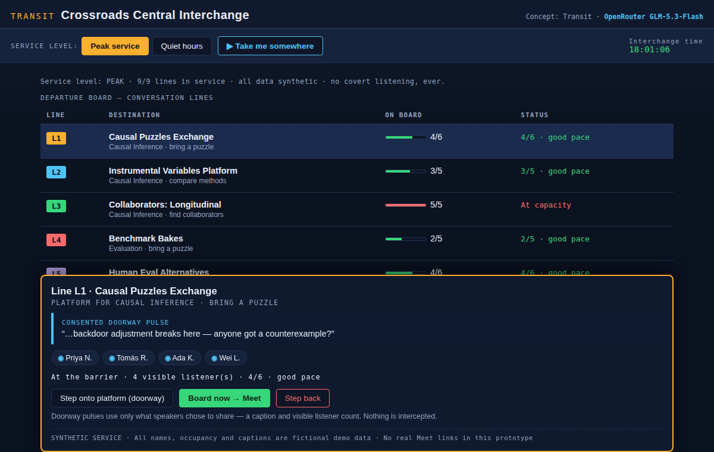

Direction 01
Open full draft ↗
Transit Board
OpenRouter · GLM-5.3-Flash
A live departure-board metaphor: conversations become services, occupancy becomes capacity, and approaching a room feels like choosing a platform.
